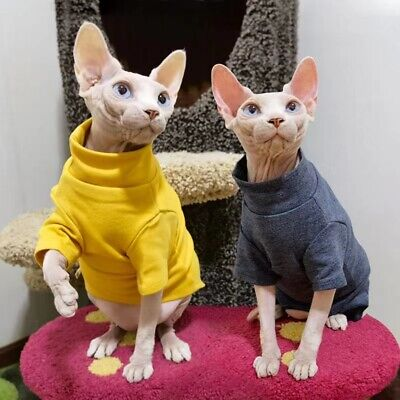

Cats
Cats are my favorite animal because they are so cute. Ironically, I am severely allergic to cats. Here are some examples of cute cats:

The orange cat above is very cute. He is looking very intently at the camera.
This kitten is so adorable and fluffy.
Unpopular opinion but I love hairless cats. These ones above are so cute in their matching sweaters.
Here is a video of even more cute cats!